Confined movements.
Contents
The third classical kind of movement for microscopic particles is the confined motion, where the purely diffusive motion is hindered by some mechanism for large displacements. This can happens e.g. if the particles are bound to a fixed structure via some elastic link, or if they are caged in a delimited space, like some membrane proteins in cytoskeletal corral.
Distinguishing between purely diffusive and confined motion by eye only can be tricky: A trapped particle can exhibit a random motion at short time scale that resembles the motion of a free particle. The MSD curves again help make the unambiguous distinction between the two cases.
clear all close all clc
Simulating confined motion.
Generating tracks that match this case is a bit more involved than the two previous trivial cases. We propose here an ad hoc technique that is a bit artificial: We suppose that at each time point, the displacement of a particle has two components: a purely random displacement, and a displacement generated by a force which is proportional to distance to some fixed point. Like if the particle was attached to a tree by an elastic spring.
We therefore simulate here coarsely a particle diffusing in a parabolic energy potential. Note that a proper molecular simulation of the real physical process would be much more detailed than it is here. You normally need to consider several time scales over which different physical quantities - such as friction - are defined. We skip this rather brutally:
Basic parameters.
SPACE_UNITS = 'µm'; TIME_UNITS = 's'; N_PARTICLES = 100; N_TIME_STEPS = 200; N_DIM = 2; % 2D SIZE = 5; % µm kT = 4.2821e-21; % kBoltzman x T @ 37ºC D = 1e-3; % µm^2/s dT = 0.05; % s short frame interval - important for later k = sqrt(N_DIM * D * dT);
Confined motion parameters.
% Particle in a potential: settings the 'stiffness' of the energy potential % Typical diameter of the trap (still in micron) Ltrap = 0.05; % µm Ktrap = kT / Ltrap^2; % = thermal energy / trap size ^ 2
Generate tracks.
tracks = cell(N_PARTICLES, 1); for i_spot = 1 : N_PARTICLES % Time time = (0 : N_TIME_STEPS-1)' * dT; % Initial position X0 = SIZE .* rand(1, N_DIM); % Energy potential: V = @(x) 0.5 * Ktrap * sum (x .^ 2); % Unused, just to show Fx = @(x) - Ktrap * (x - X0); % Is a vector % Position X = zeros(N_TIME_STEPS, N_DIM); % Init first step X(1, :) = X0; % Iterate for j = 2 : N_TIME_STEPS dxtrap = D/kT * Fx(X(j-1,:)) * dT; % ad hoc displacement dxbrownian = k * randn(1, N_DIM); X(j,:) = X(j-1,:) + dxtrap + dxbrownian; end % Store tracks{i_spot} = [ time X]; end
Confined motion trajectories.
We use again the msdanalyzer:
ma = msdanalyzer(N_DIM, 'µm', 's'); ma = ma.addAll(tracks); % Plot trajectories [hps, ha] = ma.plotTracks; ma.labelPlotTracks(ha);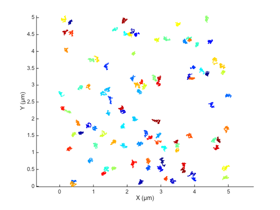
A zoomed version actually help distinguishing the confined nature of the movement.

MSD curve for confined motion.
The average MSD curve is enough to assess the confined nature of the motion:
ma = ma.computeMSD; figure hmsd = ma.plotMeanMSD(gca, true);
Computing MSD of 100 tracks... Done.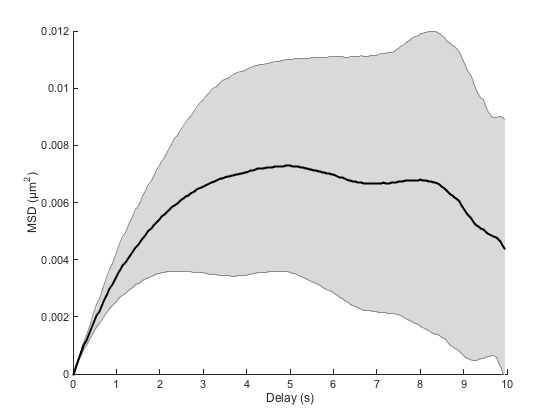
Compare for instance with the curve of the Brownian case. We clearly see that the MSD curve can no longer be considered as a straight line. Just after a few seconds, the curve saturates, showing that movement on long time scales are hindered by some mechanism.
We can retrieve an order of magnitude of the delay needed for the MSD curve to show the hindered behavior by a plain ball park analysis: We just say that the delay above which confined movement will be prominent when the displacement is enough for the elastic spring energy potential to be greater than kT:
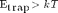
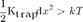
but in our case we can approximate dx² = 4 D t:
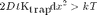
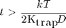
fprintf(['Time threshold for confined motion: %.1f ' TIME_UNITS '.\n'], ... kT / (2*Ktrap*D) )
Time threshold for confined motion: 1.2 s.
Importantly, this means that if you do not sample the particle movements over several time this limit, you will not be able to tell diffusive from confined motion.
Fit of the linear part of the MSD.
But we can see that below this limit, the motion is roughly diffusive, as the MSD curve is a straight line. So we could use a linear fit of a selected portion of the curve to yield an estimate of D, like we did previously. We see here on the MSD curve that for a delay below 1 second, we shall sample the diffusive process. A delay of 1 second correspond to the first 10% of the curve, so the fit command would go like this:
[fo, gof] = ma.fitMeanMSD( 0.1 );
plot(fo)
legend off
ma.labelPlotMSD
Estimating D through linear weighted fit of the mean MSD curve. D = 8.438e-04 with 95% confidence interval [ 8.191e-04 - 8.685e-04 ]. Goodness of fit: R² = 0.997.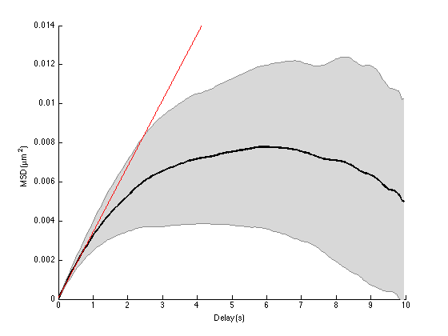
The fit yields an acceptable estimate of D. It is of course biased towards low values, as we might include in the fit points that are below the expected straight line.
Paradoxically, the fit would have failed miserably if the sampling interval or frame interval dT would have been too long (it is rather short in this simulation). So for this kind of motion, if we want to complete the analysis we need to comply to two competing criterion:
- the frame interval must be short enough to resolved the diffusive motion;
- the trajectories must be sampled on a time long enough to be able to display the confined motion.
Such is the scientist life.
Motion type analysis through log-log fitting.
@msdanalyzer offers one extra tool to decide whether the observed motion is diffusive or of another type. Note that when the motion is hindered, the MSD curve is situated below its tangent at dt=0, that would be the MSD of a purely diffusive motion. Therefore, if we model coarsely the MSD curve by a power law
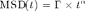
we should get 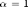 for purely diffusive motion, and 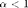 for confined motion. So we are bound to determine from our experimental (simulated) data a power law coefficient. This is best made in a log-log fashion, for which power laws turn to linear laws:
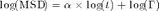
If we fit log(MSD) vs log(t) by a straight line, we can retrieve the value of alpha.
But before, a quick note on fitting power laws on experimental or simulated data: Power laws can only be determined reliably if they are sampled over at least 3 orders of magnitude. This means that there must be at least a factor of 1000 between the smallest delay and the largest one. This is very important, and is frequently abused: power laws are so accommodating that you can fit whatever you want given your sampling is short enough. In our case, with a frame interval of 50 ms and a sampling time of 10 seconds, we are quite not there. Let's try anyway.
There is again a method in @msdanalyzer that does it for you: msdanalyzer.fitLogLogMSD. It does fit individual MSD curve in the log-log space, and store results in a dedicated field.
Like for the other fitting methods, we can specify a clipping factor that only takes a portion of the curves. Since we are already below the 3 orders of magnitude rule, we will take half of the whole curves:
ma = ma.fitLogLogMSD(0.5); ma.loglogfit
Fitting 100 curves of log(MSD) = f(log(t)), taking only the first 50% of each curve... Done.
ans =
alpha: [100x1 double]
gamma: [100x1 double]
r2fit: [100x1 double]
We have one fit result per individual particle. We can quickly get a mean value for the power law:
mean(ma.loglogfit.alpha)
ans =
0.7073
So it looks like it is indeed confined.
We can beautify a bit the analysis, incorporating only results from fit that are good enough. The goodness of the fit is represented by its R square factor which lies between 0 and 1, the higher the better.
r2fits = ma.loglogfit.r2fit; alphas = ma.loglogfit.alpha; R2LIMIT = 0.8; % Remove bad fits bad_fits = r2fits < R2LIMIT; fprintf('Keeping %d fits (R2 > %.2f).\n', sum(~bad_fits), R2LIMIT); alphas(bad_fits) = []; % T-test [htest, pval] = ttest(alphas, 1, 0.05, 'left'); if ~htest [htest, pval] = ttest(alphas, 1, 0.05); end % Prepare string str = { [ '\alpha = ' sprintf('%.2f ± %.2f (mean ± std, N = %d)', mean(alphas), std(alphas), numel(alphas)) ] }; if htest str{2} = sprintf('Significantly below 1, with p = %.2g', pval); else str{2} = sprintf('Not significantly differend from 1, with p = %.2g', pval); end figure hist(alphas); box off xlabel('\alpha') ylabel('#') yl = ylim(gca); xl = xlim(gca); text(xl(2), yl(2)+2, str, ... 'HorizontalAlignment', 'right', ... 'VerticalAlignment', 'top', ... 'FontSize', 16) title('\alpha values distribution', ... 'FontSize', 20) ylim([0 yl(2)+2])
Keeping 84 fits (R2 > 0.80).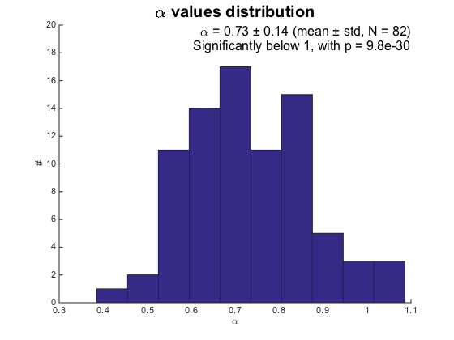
Ordinate at origin of the log-log curve.
The gamma factor in the power law can acutally be linked to the diffusion coefficient. Let's see if we can retrieve a better estimate that the one we got above through fitting the first part of the MSD curve:
gammas = ma.loglogfit.gamma; gammas(bad_fits) = []; % discard bad fits, like for alpha Dmean = mean( gammas ) / 2 / ma.n_dim; Dstd = std( gammas ) / 2 / ma.n_dim; fprintf('Estimation of the diffusion coefficient from log-log fit of the MSD curves:\n') fprintf('D = %.2e ± %.2e (mean ± std, N = %d)\n', ... Dmean, Dstd, numel(gammas));
Estimation of the diffusion coefficient from log-log fit of the MSD curves: D = 7.32e-04 ± 1.69e-04 (mean ± std, N = 84)
It seems that the estimate through the plain MSD curve fit is less biased than the estimate from the fit in the log-log space. This is not surprising: we fitted the curve by a power law, and there is noting that tells us that the real behavior of the MSD curve is actually exactly a power law. It is dangerous to blindly relate the gamma value we inferred to the actual diffusion coefficient. Anyway, the log-log technique is only used to determine the kind of motion we deal with.